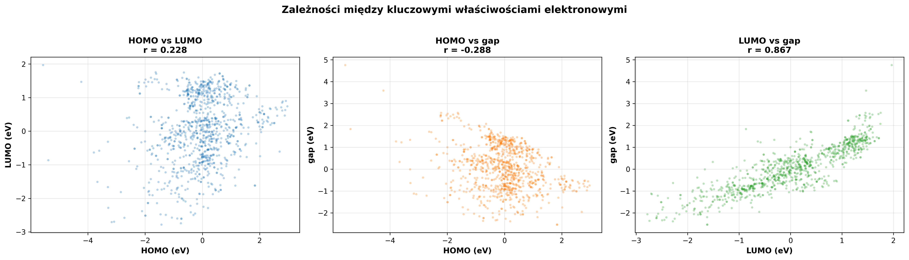

🧪 EDA Analysis - QM9 Dataset
📊 Overview
Comprehensive Exploratory Data Analysis (EDA) of the QM9 dataset, containing 130,000+ organic molecules with quantum-chemical properties calculated using the Density Functional Theory (DFT) method.
⚛️ Examples of Molecules:

🎯 Project Goals
- Validation and cleaning of molecular data
- Analysis of chemical composition and structural properties
- Investigation of structure-property relationships
- Preparation of the dataset for Machine Learning (ML) modeling
🔬 Key Analyses
1. SMILES Validation

2. Chemical Composition

📈 QM9 Dataset: Atomic Composition Analysis
📊 Overview
This section presents an Exploratory Data Analysis (EDA) focused on the QM9 dataset's molecular composition. We investigated the distribution and average count of the five most prevalent atoms: Hydrogen (H), Carbon (C), Nitrogen (N), Oxygen (O), and Fluorine (F). The findings confirm the dataset primarily consists of small, carbon-based organic molecules.
🔑 Key Findings (Averages per Molecule)
The analysis of the average composition highlights the strong dominance of hydrogen and carbon in the dataset:
- H (Hydrogen): The most abundant atom, with an average count of 9.32 atoms per molecule.
- C (Carbon): The core structural element, averaging 6.25 atoms per molecule.
- O (Oxygen): Heteroatom with a moderate presence, averaging 1.39 atoms per molecule.
- N (Nitrogen): Less common, averaging 1.09 atoms per molecule.
- F (Fluorine): The least frequent atom, with an average count of only 0.02 atoms per molecule.
📉 Distribution Insights
The histograms (as seen in the full report) reveal that while H and C show a relatively wide spread (H median 9.0, C median 6.0), the distributions for N, O, and F are highly skewed towards zero. This confirms that a significant portion of the molecules in the QM9 dataset are hydrocarbons or contain very few heavy heteroatoms.
3. HOMO-LUMO Gap
💡 The Significance of the HOMO-LUMO Gap
The HOMO-LUMO Gap is one of the most fundamental electronic properties derived from quantum chemistry calculations, representing the energy difference between the Highest Occupied Molecular Orbital (HOMO) and the Lowest Unoccupied Molecular Orbital (LUMO).
This gap is crucial because it serves as a reliable indicator of a molecule's chemical stability, reactivity, and optical/electrical behavior. * A large gap signifies a stable, less reactive molecule that requires a large amount of energy for excitation. * Conversely, a small gap indicates a soft, highly reactive molecule that is easily polarized and can participate in reactions (like charge transfer) and readily absorb low-energy photons.
Therefore, the HOMO-LUMO gap is essential for predicting kinetic stability, determining the feasibility of chemical reactions, and designing functional materials like organic photovoltaics and LEDs.

⚡ Electronic Properties Correlation Summary (QM9)
This analysis investigates the correlations between the HOMO energy, LUMO energy, and the HOMO-LUMO Gap in the QM9 dataset.
The results show that the LUMO energy is the dominant factor determining the gap size, exhibiting a strong positive correlation ($r=0.867$) with the Gap.
In contrast, the correlation between HOMO and LUMO ($r=0.228$) and between HOMO and the Gap ($r=-0.288$) is significantly weak.
This suggests that changes in the LUMO energy primarily drive changes in the overall energetic gap and thus influence the molecule's chemical reactivity and stability.
4. Executive Summary

🚀 QM9 Dataset Executive Summary
This dashboard provides a comprehensive Exploratory Data Analysis (EDA) of the QM9 quantum chemistry dataset, confirming its readiness for Machine Learning (ML) applications. The dataset features over 130,000 molecules with an average molecular weight of $123.8\ \text{g/mol}$. Key metrics show excellent quality: 100% compliance with Lipinski's Rule of Five (Ro5) and 100% data completeness.
- Composition: Molecules are primarily small organic compounds, with an average atomic composition of 9.3 H, 6.3 C, 1.1 N, and 1.4 O atoms.
- Electronic Properties: The HOMO-LUMO Gap distribution is centered around $6\ \text{eV}$. Key structural properties, such as the number of rings and molecular polarity (Dipole Moment), show highly skewed distributions towards smaller values.
- Model Readiness: The dataset is split into 81.3% train, 9.6% validation, and 9.1% test subsets. The Top 10 correlations confirm strong linear relationships (correlation $r > 0.9$) between various calculated quantum properties (e.g., thermal energy, zero-point energy, and enthalpy), validating the quality and consistency of the DFT calculations.
📈 Key Results
- ✅ Dataset: 130,000+ molecules, 100% complete
- ✅ HOMO-LUMO gap: 6.5 ± 1.2 eV
- ✅ Ro5 Compliance: 98%
- ✅ Ready for ML with no preprocessing required
💻 Technologies
- Python, Pandas, RDKit
- Matplotlib, Seaborn
- Scikit-learn (PCA)
- DeepChem